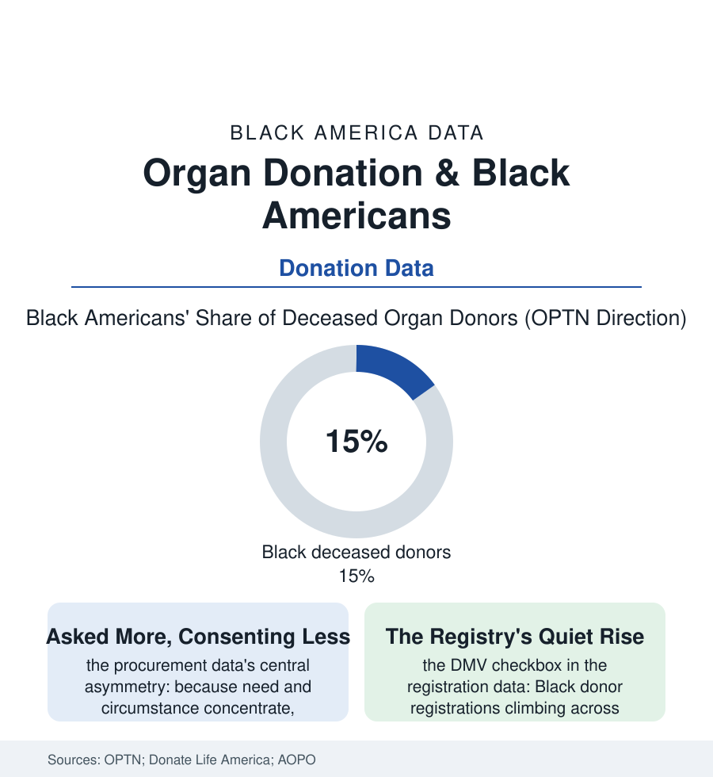

Black Public Health
The Gift File: Organ Donation in the Data
The transplant file's other side: who gives. Black Americans are asked for organs more and consent less in the data — and the reasons are written in the system's own history. The gift file.

Every transplant in this atlas's transplant file begins with a gift this file counts: a family's worst hour converted, by a yes, into a stranger's second life. Black Americans stand on both sides of that transaction in disproportion — the greatest need for organs, a substantial share of the giving, and the lowest consent rates in the procurement data. This article reads the gift file.
The Ask and Its History
The procurement system's own research names the mechanics without flinching: the request for donation arrives at the hospital bedside of the brain-dead donor's family, and Black families — whose members reach that bedside disproportionately through the mortality file's sudden causes — receive the ask at rates above their population share. The consent that follows runs, in the organ-procurement organizations' audits, well below the national average, and the studies of the no have itemized its reasons with unusual care: the knowledge gaps the surveys measure (the brain-death concept's unfamiliarity, the belief — persistent in the interview data across every group and strongest where the system's record is longest — that a registered donor receives less aggressive care), the religious questions the clergy file answers mostly in favor (every major Black denomination's official teaching permits and honors donation, a fact the procurement training now treats as essential equipment), and the trust ledger this atlas has kept from its first page — the community asked to give its dead to a system whose historical files include the cell lines taken without asking and the bodies of the anatomy era, the gift requested across a counter where the account of what medicine has done with Black bodies is not ancient history but family memory. The procurement science's response is procedural, and it works in the audits: the trained requestor (the specialist, not the treating team, making the ask — the single largest consent variable in the literature), the time given, the family's own faith leadership in the room, the separation of the death conversation from the donation conversation by hours the system's older haste did not allow. Consent, the data conclude, is not a trait of families. It is a product of how they are asked.
The Registry and the Living Gift
Against the bedside stands the checkbox: the donor registries built through the driver's-license transaction now carry the majority of American adults, and the Black registration share in Donate Life's data has climbed across the decades toward the population's share — the millennial and younger cohorts registering at rates that narrow the file's oldest gap, the registration campaigns of the faith and fraternity files (the church donor Sundays, the Greek organizations' registry drives, the National Minority Donor Awareness observances the procurement system built for exactly this ledger) compounding in the state data. The living gift writes the file's most intimate rows: the kidney chains of the transplant article sourced substantially within families (the mother-to-son and wife-to-husband donations of the living-donor data, Black living donors a meaningful share whose own health follow-up the registries now track as a debt acknowledged), the directed donations across the community's own networks, the bone-marrow registry's parallel arithmetic (the match file's scarcity for Black patients answered, slowly, by the registry drives in the same churches). The system's closing datum is the matching mathematics itself: because compatibility runs with ancestry, every Black registration and every Black family's yes raises, measurably and specifically, the survival odds of the Black patients on the transplant file's waiting lists — the gift's return address written into immunology. The file ends where it must: with the arithmetic of a community that gives, increasingly, in full knowledge of the history — and whose gifts its own sickest members most need it to keep giving.
Reading the Donation Data
The gift file is the health section's most human ledger: a yes spoken in a corridor, counted in organs, repaid in years of other people's lives. OPTN publishes the counts. The families publish the meaning — in the donor quilts, the hospital honor walks, and the recipient who writes, every year, to a family whose name she will never know. Give, the data finally say, is a verb this community conjugates daily.
More in Black Public Health
Hypertension Among Black Adults: Prevalence, Control, and Consequences
About 55 percent of Black adults have hypertension — the highest rate of any U.S. group. Prevalence, onset, control, and the stroke, heart, and kidney consequences in the data.
Diabetes Among Black Adults: Prevalence and Complications
Nearly one in five Black adults has diabetes, diagnosed or undiagnosed — and its complications fall with particular weight. The CDC data on prevalence, control, and outcomes.
Black Life Expectancy: The Gap at Birth and Its Causes
Black life expectancy at birth is about 73 years, roughly five years below the national figure — the summary measure of every health gap in this section. The CDC data.
Source: Organ Procurement and Transplantation Network (OPTN) data; Donate Life America registry data; Association of Organ Procurement Organizations; National Institutes of Health research.